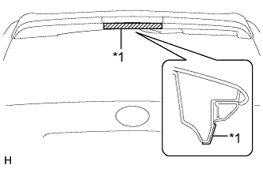
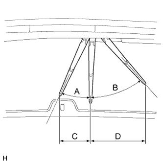
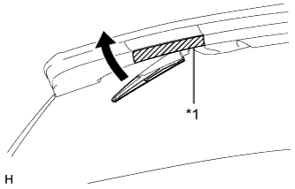
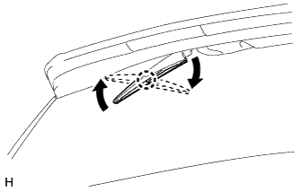
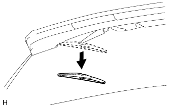
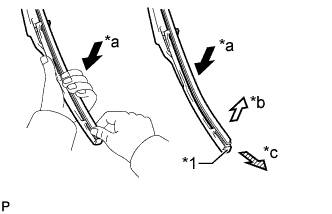
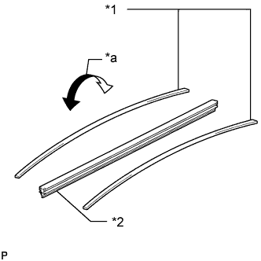
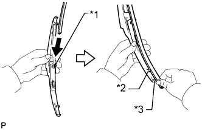
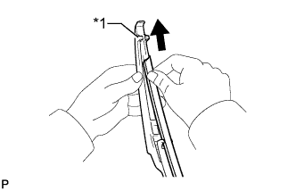
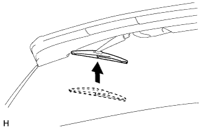

REAR WIPER RUBBER > REPLACEMENT |
| 1. REMOVE REAR WIPER BLADE |
|  |
Apply protective tape to the areas shown in the illustration.
| *1 | Protective Tape |
Turn the engine switch on (ACC).
Turn the rear wiper switch on.
|  |
Turn the engine switch off when the wiper arm stops at the position shown in the illustration.
| Area | Measurement |
| A - B | Approximately 23° to 43° |
| C - D | approximately 170.4 to 304.9 mm (6.71 to 12.0 in.) |
|  |
Raise the rear wiper arm.
| *1 | Protective Tape |
|  |
Raise the wiper blade to the position where the claw detaches with a click sound as shown in the illustration.
|  |
Pull the wiper blade straight toward the left side of the vehicle to remove it from the wiper arm.
| 2. REMOVE REAR WIPER RUBBER |
|  |
Lift and pull the end of the wiper rubber protrusion from the blade stopper as shown in the illustration.
| *1 | Stopper (Rear End of Blade) |
| *a | Lightly Push (Grip) |
| *b | Lift |
| *c | Pull |
Remove the rear wiper rubber backing plates.
| 3. INSTALL REAR WIPER RUBBER |
|  |
Install the rear wiper rubber backing plates as shown in the illustration.
| *1 | Rear Wiper Rubber Backing Plate |
| *2 | Rear Wiper Rubber |
| *a | Curve |
Insert the wiper rubber from the front end of the wiper blade to the rear end through the second claw.
|  |
After pushing the wiper rubber through the rear end claw, allow it to stick out from the rear end stopper.
| *1 | Second Claw |
| *2 | Rear End Claw |
| *3 | Rear End Stopper |
|  |
Slide the wiper rubber through the front end claw.
| *1 | Front End Claw |
| 4. INSTALL REAR WIPER BLADE |
|  |
Push the wiper blade straight toward the right side of the vehicle to install it to the wiper arm.
attach the claw to install the rear wiper blade as shown in the illustration.